这个系统有三各角色，分别是高级、中级和普通用户，不同角色的用户权限不一样
首先输入员工号还有账号进行录，输入正确的员工号和账号点击登录按钮就可以成功登录进去了
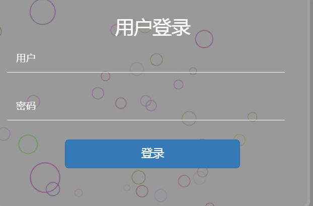登录之后就可以看到我们的界面了，右上角是一些基本的信息，您可以查看或修改个人信息、修改密码等操作
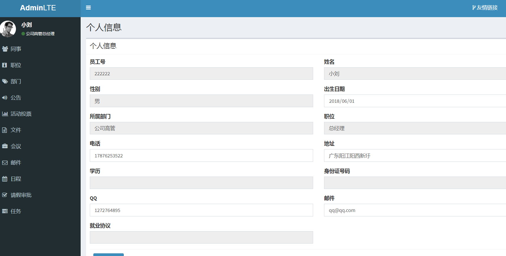点击同事，可以查看公司同事的各个信息，高级员工拥有添加和删除员工的权限，中级有添加部门下的员工的操作
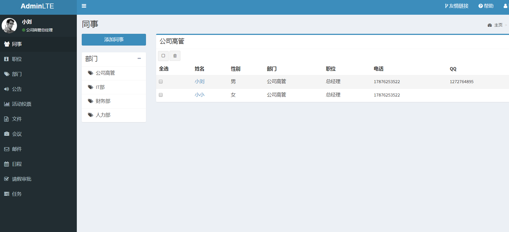点击职位，高级员工可以查看、添加、修改以及删除职位
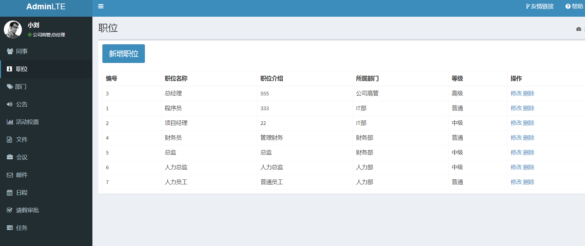点击部门，高级员工可以查看、添加、修改以及删除部门
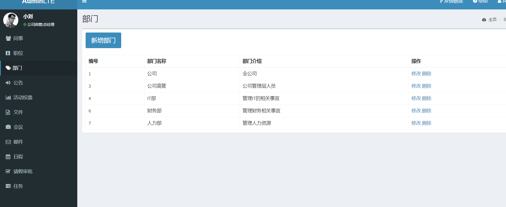点击公告，可以查看我可看的公告和发布公告
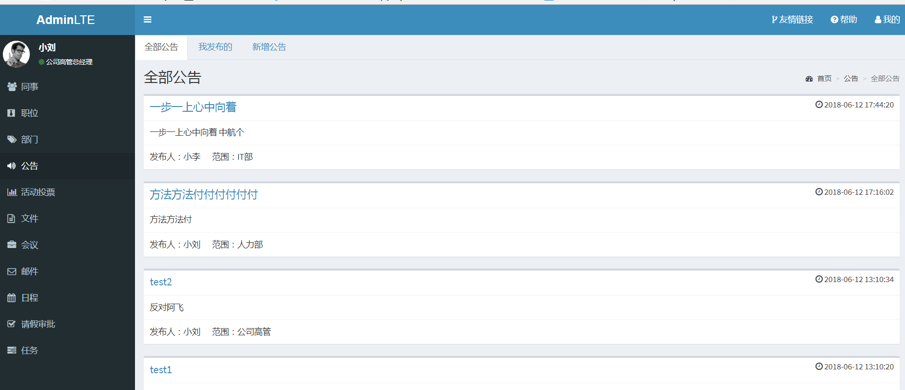点击活动投票，员工可以查看投票详情、参与投票等操作
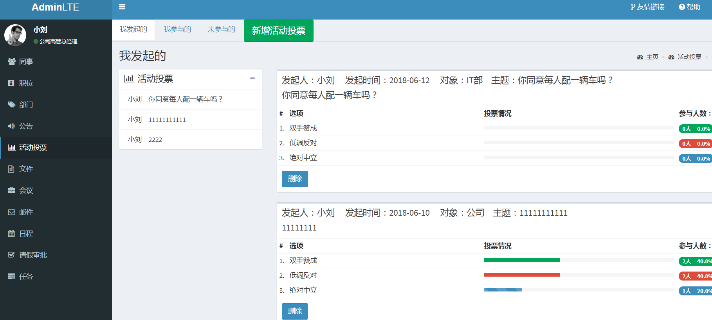点击文件，有接收文件、发送文件和发送记录的功能
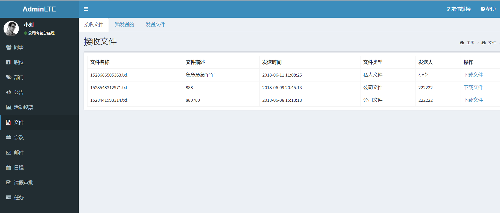 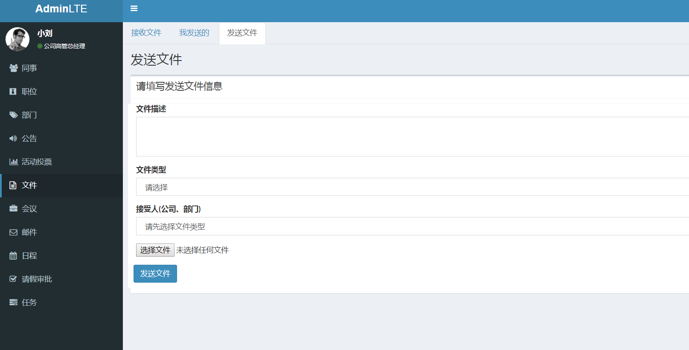点击会议，由我参与的、我发起的以及新增会议这三个模块，可以点击进去进行相应的操作
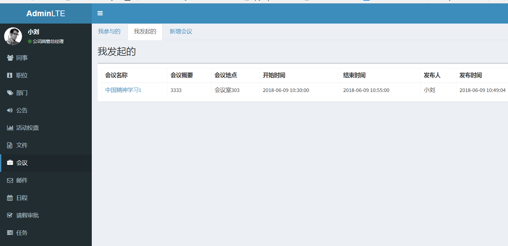 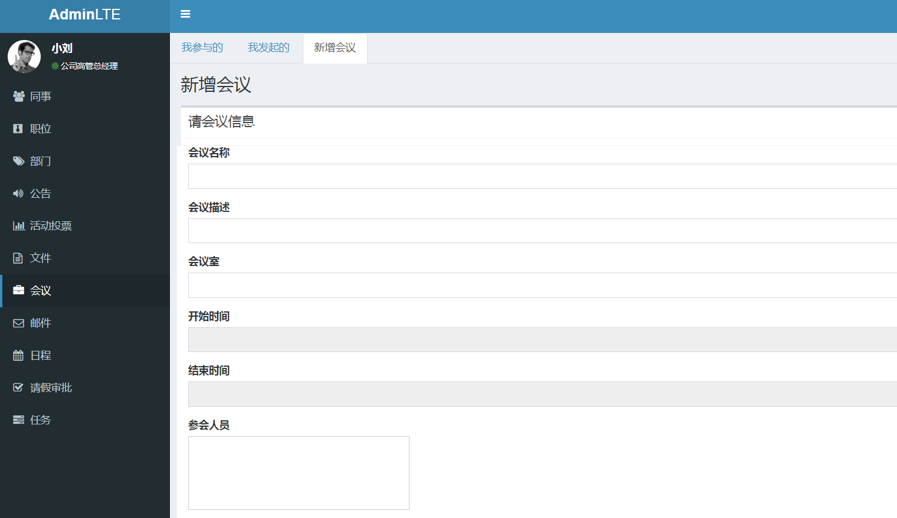点击邮件，可以查看接收邮件和发送邮件历史以及发送邮件
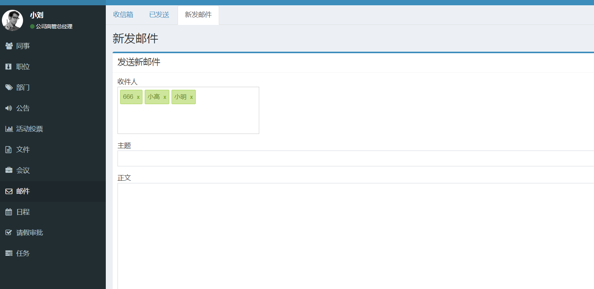 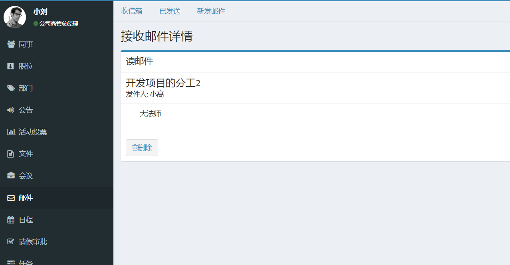点击日程，可以查看个人日程安排，亦可以添加和修改日程安排
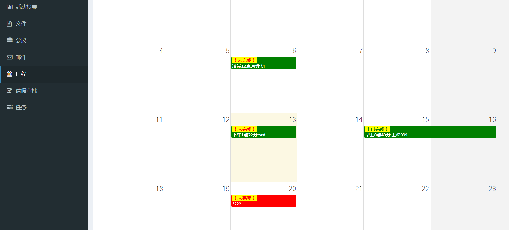点击请假审批，可以对员工的请假进行审批
点击任务，高层员工可以对底层员工发布任务，可以查看任务的状态
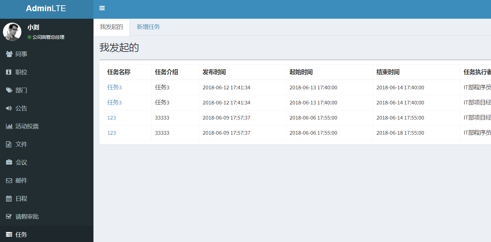其他两个角色的操作类似，只是个别的权限不一样